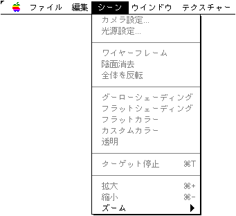

★Graphic Tools Guide
★3Dエディタユーザーズマニュアル
★Graphic Tools Guide
★3Dエディタユーザーズマニュアル
▲
戻る｜
進む▼
3Dエディタユーザーズマニュアル/2.使用方法
■シーンメニュー

●カメラ設定
- 現在サポートされていません。
●光源設定
- 下記のウインドウを表示します。光源の位置指定を行ってください。

- 球面上をマウスでクリックした位置に光源が設定されます。ドラッグして位置を調整してください。
なお、ドラッグしたまま、いったん球の縁から外へ出て、そのまま内側へ戻ってくると表側と裏側が行き来できます。球のタイプは平行光源と点光源の選択が行えます。
●ワイヤーフレーム
- トグルメニューです。このメニューがチェックされていると３D画像のワイヤーフレームが表示されます。
●陰面消去
- トグルメニューです。このメニューがチェックされているとワイヤーフレーム表示において、陰面部分の表示を行いません。また、別のポリゴンの陰に隠れている部分が消去されます。
●全体を反転
- トグルメニューです。『DXFファイル』などの画像の場合、全体の表面の指定が裏返しになっている場合があります。このとき、このメニューをチェックすると３D画像として正常に表示されます。
●グーローシェーディング
フラットシェーディング
フラットカラー
カスタムカラー
透明
- どれか１つを選択するチェックメニューです。グーローシェーディング、フラットシェーディング、フラットカラーは、シェーディング方法を指定します。これらを選択している場合。マテリアルごとに設定されているシェーディング方法は無視されます。
カスタムカラーはマテリアルごとに設定されているシェーディング方法で表示します。
透明を選択した場合、自動的にワイヤーフレームがセットされ、ワイヤーフレームのみで表示されます。
グーローシェーディングはMacintosh側ではフラットシェーディングに近い表示になりますが、セガサターン側ではグーローシェーディングを用いた表示が行われます。
●ターゲット停止
- トグルメニューです。このメニューがチェックされていると以後ターゲットへの転送を行わなくなります。
●拡大
- シーンウインドウの画像を拡大表示します。
●縮小
- シーンウインドウの画像を縮小表示します。
●ズーム
- 階層メニューにより指定のズームで画像を表示します。
▲
戻る｜
進む▼
★Graphic Tools Guide
★3Dエディタユーザーズマニュアル
Copyright SEGA ENTERPRISES, LTD., 1997